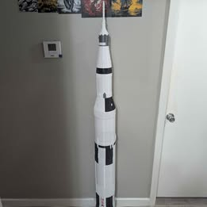

▶
▶Inside MaterialMatrix / Social
Ideas in motion.
Made in 3D.
From the first layer to the finished part, follow the builds, experiments, and ideas taking shape in the shop.
Featured video01 / PLAY
WATCH ON YOUTUBEGiant 3D printed spiral fidget▶
THE CHANNELS
A snapshot of our community
A snapshot of our community
170.9KYouTube views
155YouTube subscribers
115YouTube videos
34TikTok followers
418TikTok likes
YouTube figures checked October 30, 2026TikTok figures checked October 30, 2026
01 / Popular on YouTube
Watch what
you've been watching.
Projects, problem-solving, and the occasional experiment. Here are a few uploads viewers have spent time with.
Explore YouTube Shorts ↗


View counts are rounded and reflect the YouTube snapshot date above. Visit YouTube for current figures.
02 / Fresh from the shop
Recently on
the channel.
See recent projects, prototypes, and progress from the channel.
See the channel ↗


03 / Go deeper
More than
a quick look.
Explore longer videos on design, 3D printing, and the ideas behind the projects.
Watch more videos ↗


04 / Popular on TikTok
A six-foot
idea takes flight.
Follow the build of a 3D printed Saturn V rocket, one layer at a time.
3,489 viewsChecked October 30, 2026
Watch on TikTok ↗
▶05 / Find us
Follow along.
Pick your platform for a closer look at the work, the process, and what comes next.
Have something in mind?